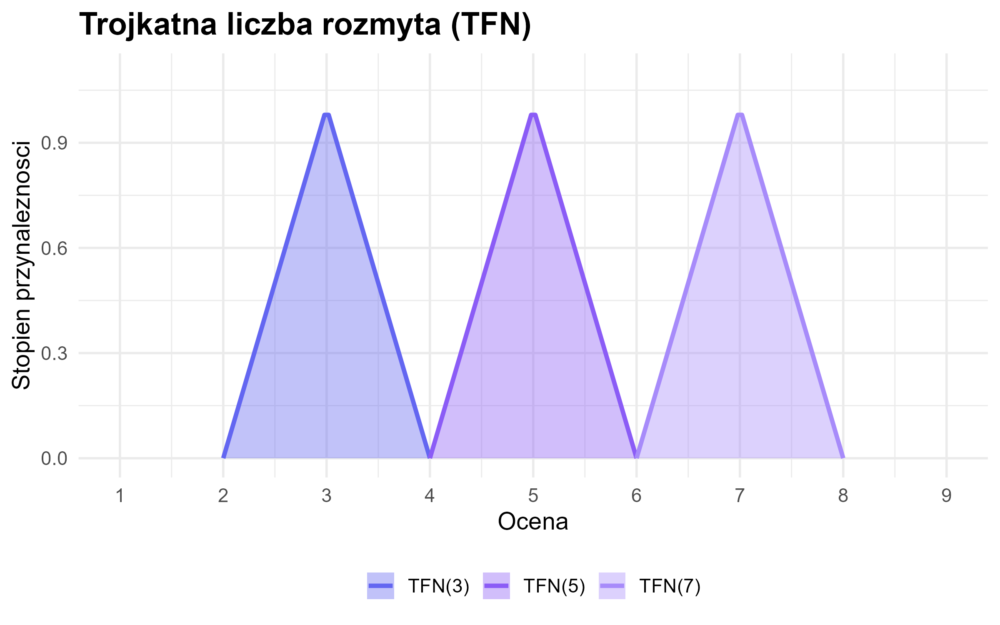
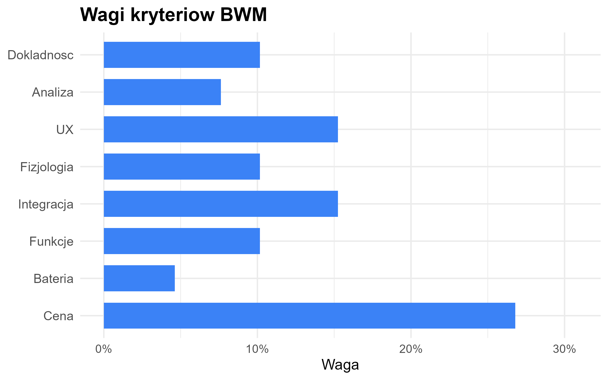

poradnik_mcda.RmdPakiet DreamySleepR służy do oceny i rankingu aplikacji do monitorowania snu z wykorzystaniem metod wielokryterialnej analizy decyzyjnej (MCDA) w środowisku rozmytym.
Pakiet implementuje pełną ścieżkę analityczną: od danych eksperckich, przez ich agregację w postaci rozmytej (trójkątne liczby rozmyte TFN), aż po wyznaczanie wag metodą Best-Worst Method (BWM) i końcowy meta-ranking agregujący wyniki metod Fuzzy TOPSIS, Fuzzy VIKOR oraz Fuzzy MULTIMOORA.
install.packages("devtools")
devtools::install_github("anbuszek/DreamySleepR")Zbiór danych mcda_dane_surowe zawiera oceny 15 ekspertów
dla trzech aplikacji do monitorowania snu według ośmiu kryteriów.
data("mcda_dane_surowe")
head(mcda_dane_surowe, 9)
#> EkspertID Aplikacja dokladnosc_faz_snu analiza_statystyk ux_latwosc
#> 1 1 AutoSleep 6 7 8
#> 2 2 AutoSleep 1 7 6
#> 3 3 AutoSleep 9 9 7
#> 4 4 AutoSleep 9 9 9
#> 5 5 AutoSleep 1 8 9
#> 6 6 AutoSleep 8 7 9
#> 7 7 AutoSleep 9 4 7
#> 8 8 AutoSleep 7 7 9
#> 9 9 AutoSleep 9 6 5
#> dane_fizjologiczne integracja_urzadzenia funkcje_dodatkowe zuzycie_baterii
#> 1 6 6 6 9
#> 2 7 8 5 9
#> 3 9 6 8 5
#> 4 2 3 8 5
#> 5 9 8 8 2
#> 6 4 8 9 1
#> 7 8 5 8 3
#> 8 9 7 9 2
#> 9 3 6 9 1
#> cena_subskrypcja
#> 1 2
#> 2 9
#> 3 9
#> 4 1
#> 5 1
#> 6 3
#> 7 9
#> 8 4
#> 9 3
str(mcda_dane_surowe)
#> 'data.frame': 45 obs. of 10 variables:
#> $ EkspertID : int 1 2 3 4 5 6 7 8 9 10 ...
#> $ Aplikacja : Factor w/ 3 levels "AutoSleep","Sleep as Android",..: 1 1 1 1 1 1 1 1 1 1 ...
#> $ dokladnosc_faz_snu : num 6 1 9 9 1 8 9 7 9 2 ...
#> $ analiza_statystyk : num 7 7 9 9 8 7 4 7 6 9 ...
#> $ ux_latwosc : num 8 6 7 9 9 9 7 9 5 9 ...
#> $ dane_fizjologiczne : num 6 7 9 2 9 4 8 9 3 6 ...
#> $ integracja_urzadzenia: num 6 8 6 3 8 8 5 7 6 9 ...
#> $ funkcje_dodatkowe : num 6 5 8 8 8 9 8 9 9 6 ...
#> $ zuzycie_baterii : num 9 9 5 5 2 1 3 2 1 4 ...
#> $ cena_subskrypcja : num 2 9 9 1 1 3 9 4 3 4 ...
#> - attr(*, "out.attrs")=List of 2
#> ..$ dim : Named int [1:2] 15 3
#> .. ..- attr(*, "names")= chr [1:2] "EkspertID" "Aplikacja"
#> ..$ dimnames:List of 2
#> .. ..$ EkspertID: chr [1:15] "EkspertID= 1" "EkspertID= 2" "EkspertID= 3" "EkspertID= 4" ...
#> .. ..$ Aplikacja: chr [1:3] "Aplikacja=AutoSleep" "Aplikacja=Sleep as Android" "Aplikacja=Garmin Sleep Advanced"Analiza obejmuje osiem kryteriów decyzyjnych:
| Kryterium | Typ | Opis |
|---|---|---|
| Dokładność faz snu | max | Dokładność monitorowania faz snu |
| Analiza statystyk | max | Jakość analiz statystycznych snu |
| Łatwość obsługi | max | Intuicyjność interfejsu użytkownika |
| Dane fizjologiczne | max | Zakres danych fizjologicznych (tętno, oddech) |
| Integracja z urządzeniami | max | Kompatybilność ze smartwatchami/opaskami |
| Funkcje dodatkowe | max | Budzik, wykrywanie chrapania itp. |
| Zużycie baterii | min | Zużycie energii przez aplikację |
| Cena / subskrypcja | min | Koszt korzystania z aplikacji |
Składnia modelu określa mapowanie zmiennych surowych na kryteria:
skladnia <- "
Dokladnosc =~ dokladnosc_faz_snu;
Analiza =~ analiza_statystyk;
UX =~ ux_latwosc;
Fizjologia =~ dane_fizjologiczne;
Integracja =~ integracja_urzadzenia;
Funkcje =~ funkcje_dodatkowe;
Bateria =~ zuzycie_baterii;
Cena =~ cena_subskrypcja
"Funkcja przygotuj_dane_mcda() przekształca surowe dane
ankietowe w rozmytą macierz decyzyjną. Każda ocena jest zamieniana na
trójkątną liczbę rozmytą (TFN) o postaci (l, m, u), gdzie l = x - 1, m =
x, u = x + 1.
dane_rozmyte <- przygotuj_dane_mcda(
dane = mcda_dane_surowe,
skladnia = skladnia,
kolumna_alternatyw = "Aplikacja"
)
dane_rozmyte
#> l m u l m u
#> AutoSleep 5.666667 6.666667 7.666667 6.000000 7.000000 8.000000
#> Sleep as Android 6.400000 7.400000 8.400000 4.600000 5.600000 6.600000
#> Garmin Sleep Advanced 5.200000 6.200000 7.200000 2.933333 3.933333 4.933333
#> l m u l m u
#> AutoSleep 7.000000 8.000000 9.000000 4.419048 5.419048 6.419048
#> Sleep as Android 4.000000 5.000000 6.000000 4.038095 5.038095 6.038095
#> Garmin Sleep Advanced 5.133333 6.133333 7.133333 3.733333 4.733333 5.733333
#> l m u l m u
#> AutoSleep 5.800000 6.800000 7.800000 6.266667 7.266667 8.266667
#> Sleep as Android 3.066667 4.066667 5.066667 4.466667 5.466667 6.466667
#> Garmin Sleep Advanced 6.466667 7.466667 8.466667 3.400000 4.400000 5.400000
#> l m u l m u
#> AutoSleep 2.533333 3.533333 4.533333 2.733333 3.733333 4.733333
#> Sleep as Android 3.866667 4.866667 5.866667 4.400000 5.400000 6.400000
#> Garmin Sleep Advanced 6.600000 7.600000 8.600000 5.933333 6.933333 7.933333
#> attr(,"nazwy_kryteriow")
#> [1] "Dokladnosc" "Analiza" "UX" "Fizjologia" "Integracja"
#> [6] "Funkcje" "Bateria" "Cena"Wizualizacja przykładowych trójkątnych liczb rozmytych:
DreamySleepR:::.wykres_tfn()
Metoda Best-Worst Method (BWM) wyznacza wagi kryteriów na podstawie porównań parytetowych. Użytkownik wskazuje kryterium najlepsze i najgorsze, a następnie ocenia odległość preferencji między nimi a pozostałymi.
Kryterium najlepsze: Cena / subskrypcja (najważniejsze ze względu na budżet studentów). Kryterium najgorsze: Zużycie baterii (najmniej ważne przy krótko-/średnioterminowym monitorowaniu snu).
kryteria <- c(
"Dokladnosc", "Analiza", "UX", "Fizjologia",
"Integracja", "Funkcje", "Bateria", "Cena"
)
najlepsze_do_innych <- c(3, 4, 2, 3, 2, 3, 5, 1)
inne_do_najgorszego <- c(3, 2, 4, 3, 4, 3, 1, 5)
wynik_bwm <- oblicz_wagi_bwm(
nazwy_kryteriow = kryteria,
najlepsze_do_innych = najlepsze_do_innych,
inne_do_najgorszego = inne_do_najgorszego
)
data.frame(
Kryterium = kryteria,
Waga = round(wynik_bwm$wagi_kryteriow, 4)
)
#> Kryterium Waga
#> 1 Dokladnosc 0.1016
#> 2 Analiza 0.0762
#> 3 UX 0.1524
#> 4 Fizjologia 0.1016
#> 5 Integracja 0.1524
#> 6 Funkcje 0.1016
#> 7 Bateria 0.0462
#> 8 Cena 0.2679Wskaźnik spójności (CR) dla porównań BWM:
Wizualizacja wag:
DreamySleepR:::.wykres_bwm(wynik_bwm)
Funkcja rozmyty_meta_ranking() agreguje wyniki trzech
metod: Fuzzy TOPSIS, Fuzzy VIKOR oraz Fuzzy MULTIMOORA. Każda metoda
generuje własny ranking, a następnie rankingi są agregowane sumą rang,
teorią dominacji oraz metodą konsensusu (RankAggreg).
typy_kryteriow <- c("max", "max", "max", "max", "max", "max", "min", "min")
macierz <- as.matrix(dane_rozmyte)
wynik_meta <- rozmyty_meta_ranking(
macierz_decyzyjna = macierz,
typy_kryteriow = typy_kryteriow,
bwm_kryteria = kryteria,
bwm_najlepsze = najlepsze_do_innych,
bwm_najgorsze = inne_do_najgorszego
)
#> Obliczanie wag metodą BWM...
#> Obliczanie wag metodą BWM...Tabela porównawcza pokazuje rangi każdej metody oraz trzy wersje meta-rankingu:
knitr::kable(
wynik_meta$porownanie,
caption = "Porównanie rankingów oraz wynik końcowego konsensusu"
)| Alternatywa | R_VIKOR | R_TOPSIS | R_MULTIMOORA | Meta_Suma | Meta_Dominacja | Meta_Agregacja |
|---|---|---|---|---|---|---|
| AutoSleep | 1 | 1 | 1 | 1 | 1 | 1 |
| Sleep as Android | 2 | 2 | 2 | 2 | 2 | 2 |
| Garmin Sleep Advanced | 3 | 3 | 3 | 3 | 3 | 3 |
Macierz korelacji rang Spearmana:
knitr::kable(
round(wynik_meta$korelacje, 3),
caption = "Korelacje rang Spearmana między metodami"
)| R_VIKOR | R_TOPSIS | R_MULTIMOORA | Meta_Suma | Meta_Dominacja | Meta_Agregacja | |
|---|---|---|---|---|---|---|
| R_VIKOR | 1 | 1 | 1 | 1 | 1 | 1 |
| R_TOPSIS | 1 | 1 | 1 | 1 | 1 | 1 |
| R_MULTIMOORA | 1 | 1 | 1 | 1 | 1 | 1 |
| Meta_Suma | 1 | 1 | 1 | 1 | 1 | 1 |
| Meta_Dominacja | 1 | 1 | 1 | 1 | 1 | 1 |
| Meta_Agregacja | 1 | 1 | 1 | 1 | 1 | 1 |
Aby odtworzyć pełną analizę:
library(DreamySleepR)
data("mcda_dane_surowe")
dane_rozmyte <- przygotuj_dane_mcda(
dane = mcda_dane_surowe,
skladnia = "
Dokladnosc =~ dokladnosc_faz_snu;
Analiza =~ analiza_statystyk;
UX =~ ux_latwosc;
Fizjologia =~ dane_fizjologiczne;
Integracja =~ integracja_urzadzenia;
Funkcje =~ funkcje_dodatkowe;
Bateria =~ zuzycie_baterii;
Cena =~ cena_subskrypcja
",
kolumna_alternatyw = "Aplikacja"
)
macierz <- as.matrix(dane_rozmyte)
typy_kryteriow <- c("max", "max", "max", "max", "max", "max", "min", "min")
wynik_meta <- rozmyty_meta_ranking(
macierz_decyzyjna = macierz,
typy_kryteriow = typy_kryteriow,
bwm_kryteria = kryteria,
bwm_najlepsze = c(3, 4, 2, 3, 2, 3, 5, 1),
bwm_najgorsze = c(3, 2, 4, 3, 4, 3, 1, 5)
)
print(wynik_meta$porownanie)
plot(wynik_meta)